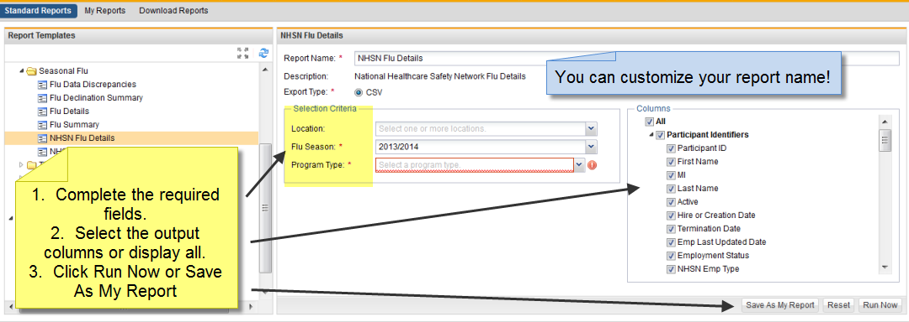

The NHSN Influenza Detail report uses the same Selection Criteria as the NHSN Influenza Summary report but will display the complete details including all Participant Identifiers, General Information, Survey and Test information, NHSN Information and NHSN Classifications. You can use this report to identify those who are not in the correct NHSN categories and Employee Status.

On the Reports tab, click on NHSN Influenza Details.
You can customize the Report Name. Then complete the required Selection Criteria.
Location – Select one or more locations
Flu Season * – Defaults to current flu season years
Program Type * - Mandatory or Non-Mandatory – select the correct program type per your facility
Click Run Now. The report is created in Excel format.
Click Download Reports to view the report. You may see these processing messages - "Report is queued", "Report is processing", and when the report is ready "This report is ready to be viewed". The icons are to Edit, View and Share
Click the View icon to download the report. The report will open in Excel format .